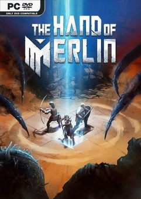
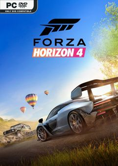
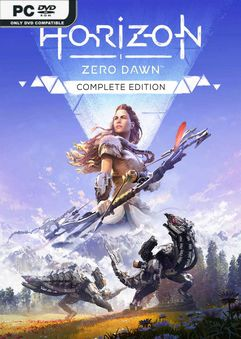
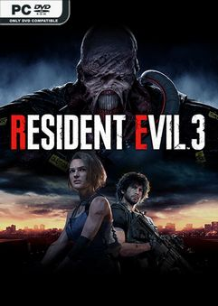
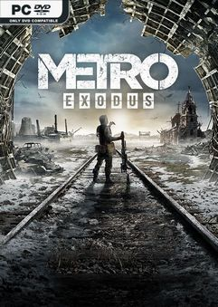

THE HAND OF MERLIN

R$: 95,00
The Hand of Merlin é um RPG baseado em turnos no estilo roguelite no qual lendas arturianas se chocam com o terror de ficção científica. Procure os fragmentos perdidos de sua alma, espalhados por todo o multiverso — e salve o máximo de mundos que puder.
FORZA HORIZON 4

R$: 200,00
Forza Horizon 4 é um jogo de corrida em mundo aberto desenvolvido pela Playground Games em colaboração com a Turn 10 e publicado pela Xbox Game Studios, que na época do lançamento ainda era conhecida como Microsoft Studios. É o quarto da franquia Forza Horizon e o décimo primeiro da edição Forza.
HORIZON ZERO DAWN

R$: 150,00
Horizon Zero Dawn é um jogo eletrônico de RPG de ação desenvolvido pela Guerrilla Games e publicado pela Sony Interactive Entertainment. Foi lançado em 28 de fevereiro de 2017 para PlayStation 4 e em 7 de agosto de 2020 para Microsoft Windows.
RESIDENT EVIL 3

R$: 150,00
Resident Evil 3: Nemesis, conhecido no Japão como Biohazard 3: Last Escape, é um jogo eletrônico de survival horror desenvolvido e publicado pela Capcom, lançado originalmente para o PlayStation em 1999. É o terceiro jogo da franquia Resident Evil, e ocorre antes e após os acontecimentos de Resident Evil 2.
METRO EXODUS

R$: 180,00